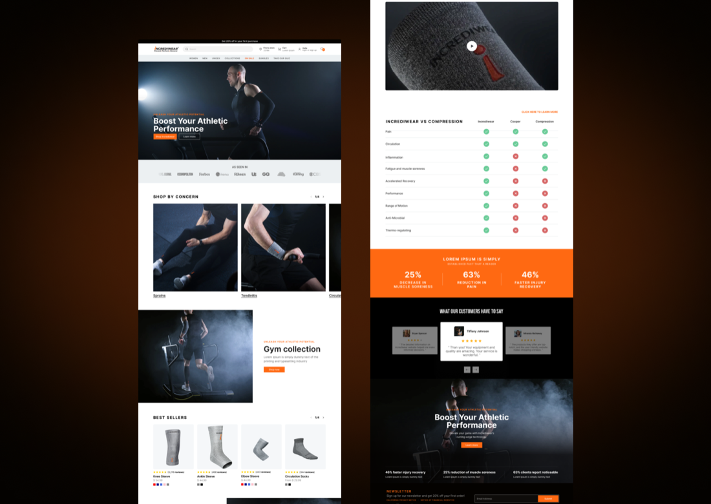
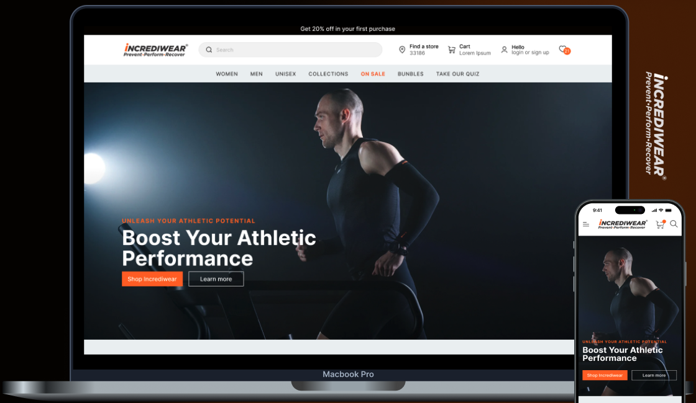
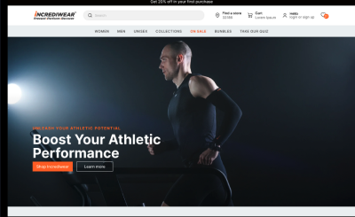
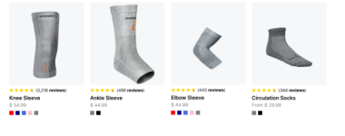
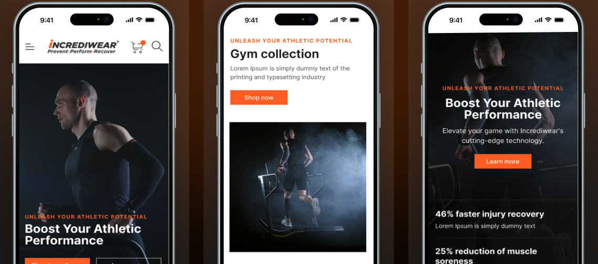

00 · Executive summary1 week
A homepage redesign for Incrediwear, a protective sports apparel brand, to improve navigation and promote its products in an accessible way.
+25%
Conversion rate
−30%
Average task completion time
−20%
Clicks to complete tasks
90%
Found the platform easy to use
Problem
The website had significant UX and conversion deficiencies, limiting growth and customer satisfaction.
Approach
A one-week design-thinking sprint, from interviews and benchmarking to moderated usability tests.
Outcome
A clearer homepage with featured products, promotions, shop-by-concern, and a B2B path.
Redesign objectives
- +20% visitor-to-buyer conversion.
- +30% average time on site.
- +25% sales of featured products in the first three months.
Timeline · one weekFig. A
PlanningBrief, research, benchmark
Let's startWorkshop, personas, journey
Co-creationSitemap, wireframes, UI kit
ConceptHi-fi, specs, accessibility
Pre-launchUsability tests, metrics
Step 01 / 05Days 1–2
01
Empathize
GoalUnderstand why the current site converts so little and what users really want.
BRIEF
Sport feeling
Requirements for the right arrangement of elements and sections.
RESEARCH
10+
Interviews with colleagues and customers to explore pain points.
BENCHMARK
6
Direct and indirect competitors, on visual and functional factors.
Issues to solve
I.01
Hidden catalog
Users struggled to find products quickly.
I.02
No promotions
Offers weren't visible on the homepage.
I.03
Confusing navigation
Unclear paths to products and information.
I.04
No B2B section
Business clients couldn't find relevant content.
I.05
Too much orange
Overpowering, distracting from key content.
I.06
Low-quality visuals
Hurt the brand's professional perception.
The navigation is confusing and not intuitive. I don't know where to look to quickly find specific products.
Tyler Brooks · Gym owner
There are no clear sections for B2B clients. I find it hard to locate relevant information for businesses.
Paige Sinclair · Purchasing manager
Step 02 / 05Days 2–3
02
Define
GoalClarify user needs and the key business goals.
Age group target · US fitness & health habitsFig. B
SM
Sophia Miller, 24University student
- Pain
- Hard to find specific sportswear; no clear promotions; confusing navigation.
- Goal
- An intuitive catalog and visible offers on the homepage.
JA
Jason Anderson, 35Marketing professional
- Pain
- Needs quality gear fast; no dedicated B2B content.
- Goal
- Quick access to products and clear bulk-purchase options.
User journey · from homepage to purchase
Stage
Enter the site
Find featured products
Explore features & reviews
Purchase
Pain point
Slow loading; confusing organization
Featured products hard to find; confusing filters
Unclear tech info; hidden reviews
Long checkout; few payment options
Opportunity
Faster load and clearer navigation
Visible featured products with filters
Clear tech info and reachable testimonials
Fewer steps and secure payment options
Step 03 / 05Days 3–4
03
Ideate
GoalHighlight featured products, make navigation intuitive, and push effective CTAs while respecting the brand.
Core design features
- Featured products with quality images and direct purchase CTAs.
- Promotions banner for special offers.
- Navigation menu with clear categories and quick search.
- B2B solutions with custom services, bulk discounts, and easy contact.
- Quality visuals that still load fast.
Information architectureFig. C
Find a storeProfileHomeOn saleCollectionsTake your quiz
Homepage flowShop by concernFeatured · collections · comparisonsPromotions · technologyNew arrivalsTrust indicators: partners, metrics
StyleBlack · orange · graysInterBrand colors kept, orange used with restraint
Key decisionKeep the established brand colors but use orange with restraint, since users found it overwhelming. Wireframes came from a team brainstorm in Figma, FigJam, and Miro.
Step 04 / 05Days 4–5
04
Prototype
GoalA homepage built from 8 key sections, desktop and responsive.
01
Banner
Featured products and offers.
02
Shop by concern
Navigate by need: sprains, tendinitis…
03
Collections
Best sellers and new arrivals.
04
Technology
Innovative features of the products.
05
Comparison
Side-by-side feature evaluation.
06
Social proof
Facts and usage details.
07
Clients
Testimonials and success stories.
08
CTA
Guides users to act.

Step 05 / 05Days 6–7
05
Testing
GoalMeasure usability, navigation efficiency, and conversion on the new homepage.
PARTICIPANTS
15–20 users
Fitness enthusiasts aged 24–38 in the US, on desktop and mobile.
METHOD
Moderated sessions
60 minutes, remote or in person.
TASKS
Real shopping
Explore, find featured products, filter collections, and buy.
METRICS
What we measured
Success rate, time, errors, SUS, and navigation efficiency.
FEEDBACK
Open questions
Likes, challenges, and suggestions.
ANALYSIS
Before vs. after
Pre- and post-redesign metrics compared.
06 · ResultsPost-redesign
06
Easier to shop, easier to buy
Outcome90% found the platform easy to use, a sign the user-centric design worked.
CONVERSION
+25%
More visitors completing purchases.
AGILITY
−30%
Average task completion time.
SATISFACTION
+40%
SUS score increase.
CLICKS
−20%
Fewer clicks to complete tasks.
Evidence
Desktop + mobile Promotions Best sellers Responsive




Next case · 09 / 21UTL Logistics
→